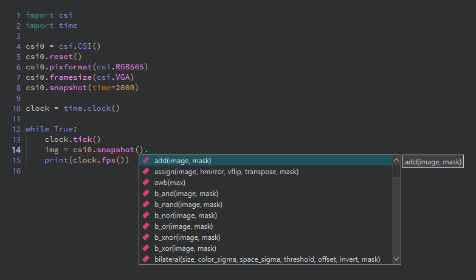

13.1.1. 스크립트 편집기¶
이 편집기는 Qt Creator 코어를 기반으로 구축된 본격적인 전문 텍스트 편집기로, 탭 방식의 단일 창 레이아웃을 사용합니다. 상단의 탭은 열려 있는 파일 사이를 전환하며, 일반적인 파일 및 편집 작업은 File 및 Edit 메뉴와 왼쪽 가장자리의 도구 모음 버튼에 있습니다. 대부분은 여느 편집기에서 기대하는 대로 작동합니다. 아래 기능들은 MicroPython 작업에 중요한 것들입니다.
13.1.1.1. 공백¶
Python에서 들여쓰기는 문법이며, 잘못 들어간 탭으로 인한 IndentationError 는 일반 표시에서는 보이지 않습니다. 그런 일이 발생하면 Edit → Advanced 아래의 Visualize Whitespace 를 켜세요. 모든 공백과 탭이 화면에 그려지므로 어울리지 않는 것을 쉽게 발견할 수 있습니다.
13.1.1.2. 찾기 및 바꾸기¶
Ctrl+F 를 눌러 찾기 및 바꾸기 표시줄을 엽니다. 일반 텍스트, 전체 단어, 또는 정규식을 매칭하며, 바꾸기는 캡처 그룹을 사용하고 바꾸는 각 매치의 대소문자를 보존할 수 있습니다. Ctrl+Shift+F 를 누르면 Advanced Find 가 열려, 검색을 열려 있는 모든 파일 또는 디스크의 폴더 아래 모든 파일로 넓히고 클릭 가능한 결과로 매치를 나열합니다.
13.1.1.3. 코드 자동 완성 및 호출 팁¶
편집기는 카메라의 Python API를 알고 있습니다. 모듈이나 객체 이름 뒤에 . 를 입력하면 해당 함수, 메서드, 상수와 함께 자동 완성 목록이 열립니다. 하나를 선택하면 호출 팁이 인수를 안내합니다. 어떤 API 이름 위에 마우스를 올리면 툴팁에 그 문서를 볼 수 있습니다. 편집기를 떠나지 않고도 라이브러리 레퍼런스와 동일한 내용을 볼 수 있습니다. 자동 완성은 카메라 전용 모듈(csi, image, machine, 그리고 라이브러리 레퍼런스의 나머지)뿐만 아니라 Python 언어 자체도 다룹니다.
번들된 Python 언어 서버가 입력하는 대로 코드를 검사하여, 정의되지 않은 이름, 사용되지 않은 임포트, 문법 오류를 스크립트가 실행되기도 전에 밑줄로 표시합니다. 오타로 인한 충돌의 한 부류 전체가 카메라에 절대 도달하지 않게 됩니다.

점을 입력하면 자동 완성 목록이 열립니다. 각 항목은 전체 호출 시그니처와 함께 표시됩니다.¶
13.1.1.4. GitHub Copilot¶
편집기는 인라인 AI 코드 제안을 위한 GitHub Copilot을 지원합니다. 환경설정 대화 상자의 Copilot 섹션에서 Copilot 구독이 있는 GitHub 계정으로 로그인하기 전까지는 아무 동작도 하지 않습니다. 다시 끄려면 로그아웃하거나 활성화 체크박스를 해제하세요.
13.1.1.5. Python 파일을 넘어서¶
편집기는 스크립트 이외의 것도 엽니다. 이미지 파일을 열면 확대/축소 및 화면 맞춤 컨트롤이 있는 이미지 뷰어에 표시됩니다. IDE를 떠나지 않고 저장된 스냅샷과 템플릿을 검사하기에 편리합니다. 바이너리 파일을 열면 16진수 편집기에 표시되어 녹화 파일이나 디스크립터 파일의 내부를 빠르게 살펴보는 데 유용합니다.
13.1.1.6. IDE 외부에서 편집하기¶
스크립트는 일반 .py 파일이며, IDE에서 편집하도록 강제하는 것은 아무것도 없습니다. 편집기에서 열려 있는 파일이 디스크에서 변경되면(다른 편집기에서 저장되거나, 버전 관리에서 가져온 경우), IDE는 창이 포커스를 다시 얻는 즉시 이를 알아차리고 파일을 다시 로드합니다. 편집기의 복사본에 저장되지 않은 자체 변경 사항이 있는 경우에만 먼저 묻습니다.